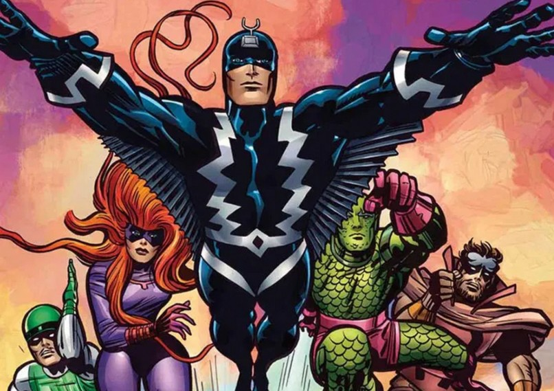
Les Inhumains
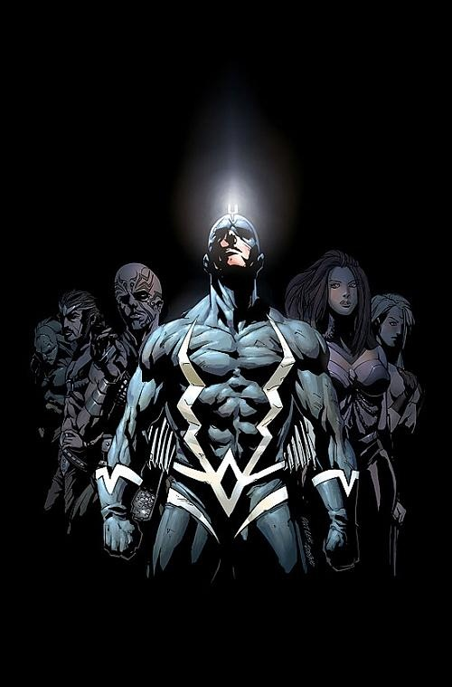
A l'instar des Éternels et des Déviants, les Inhumains sont issus d'une expérience de mutation à partir d'humains, créés par les Kree.
Il y a environ 25 000 ans, une guerre civile éclata dans la civilisation des Éternels et une faction s'exila dans l'espace, où elle s'établit sur Uranus, mais fut détruite par les Kree.
Quelques survivants partirent se cacher sur Titan, l'une des lunes de Saturne.
Les Kree firent un prisonnier, Arlok, qui servit de schéma de base pour créer la race des Inhumains.
Les Kree voulaient d'abord en faire leurs esclaves de guerre dans la guerre Kree-Skrull, mais ils renoncèrent rapidement à ce projet après que l'Intelligence Suprême Kree eut pressenti qu'il mènerait à leur propre destruction.
Livrés à eux-même, les Inhumains errent à travers ce qui deviendra l'Europe, avant de s'installer sur une île de l'Atlantique nord : Attilan, une cité bâtie par le Roi Myran il y a 7 000 ans.
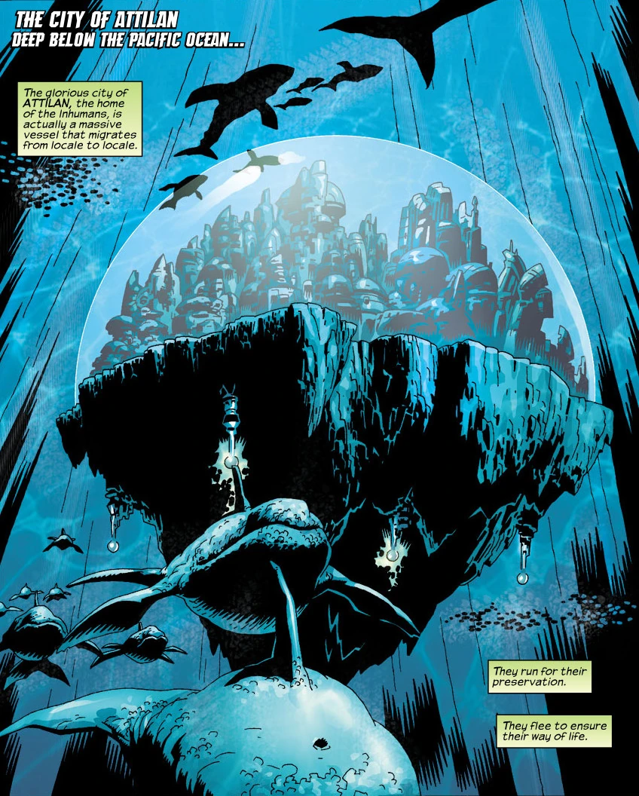
Là, leur civilisation put s'épanouir au point de dépasser celle de leurs prédécesseurs.
Leurs connaissances, notamment en génétique, étaient formidables et ils mirent en place un système de gouvernement basé sur les capacités génétiques, la génocratie.
Un de leurs généticiens, Randac, isola le catalyseur chimique de la mutation humaine : la « brume tératogène » dans laquelle il s'immergea totalement.
Il en ressortit doté de pouvoirs mentaux égalant ceux des Éternels.
Il fut élu gouverneur, et institua un programme permettant à ses sujets de suivre le même traitement que lui, mais la moitié des individus qui y furent soumis se mirent à développer des mutations non-humaines.
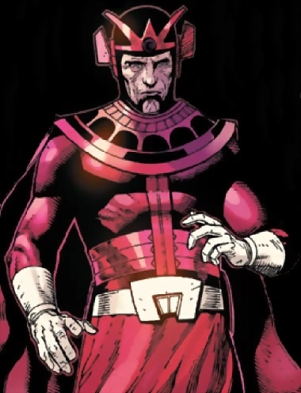
Il fut alors décidé que pour se soumettre au traitement, il faudrait subir au préalable de nombreux tests génétiques.
Mais le mal était fait et la minorité non-humaine fut particulièrement maltraitée.
Des siècles plus tard, un gouverneur nommé Gral, las de cet état de fait, décida que tous les Inhumains passeraient par la brume tératogène d'où les trois quarts ressortirent mutés physiquement.
Ce n'est que longtemps après, grâce à Auran, que les Inhumains s'acceptèrent les une les autres.
Depuis des millénaires, les Inhumains tentent de réduire leurs différences génétiques qui, à la différence des Déviants, sont héréditaires.
Des contrôles extrêmement rigoureux ont réussi à redonner leur apparence humaine à la moitié de la population.
Aujourd'hui, Attilan, qui a dû être déménagée deux fois au cours du dernier siècle (dans l'Himalaya d'abord, puis sur la Zone Bleue de la Lune, à côté de la base de Uatu le Gardien), est dirigée par Flèche Noire, fils d'Agon, l'un des chefs les plus populaires depuis Auran.

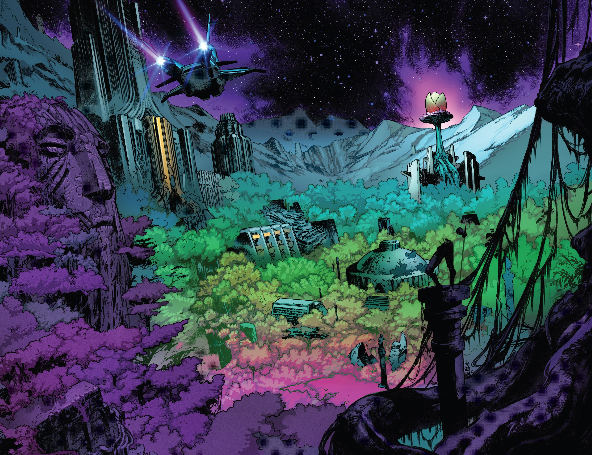
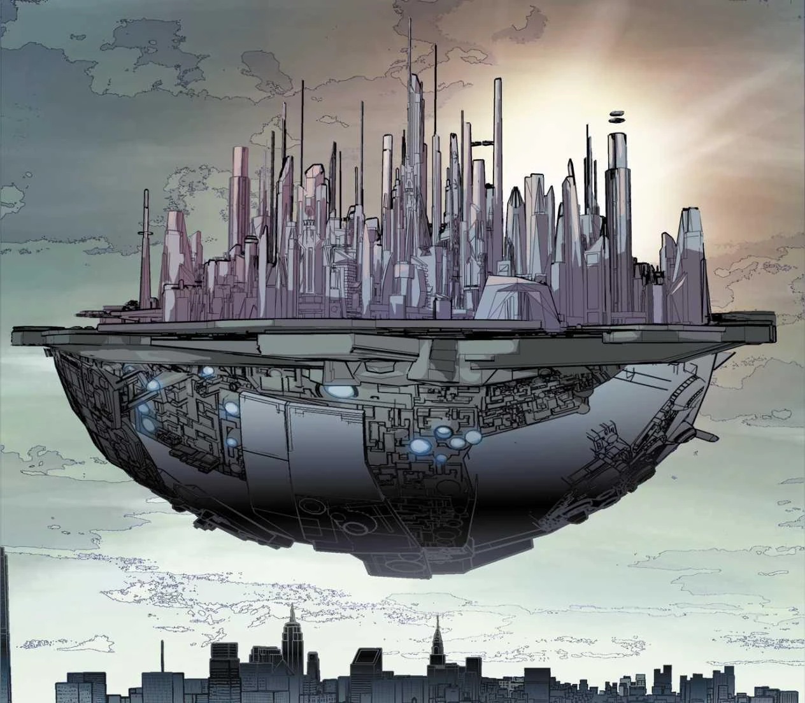
Agon s'était soumis, ainsi que sa femme Rynda et leurs proches parents, à la brume tératogène pour pouvoir en étudier les effets.
Le fils dont Rynda était enceinte, Blackagar Boltagon, devint le mutant le plus puissant qu'Attilan ait jamais connu.

A l'heure actuelle, la population Inhumaine compte environ 1 230 individus, vivant tous à Attilan, nombre stable depuis quinze siècles.
Les légendes racontent qu'il en existerait un toujours prisonnier des Krees, qui serait l'un des plus puissants, mais qui serait plongé dans un profond sommeil.
Un jour, alors que Thanos arriva sur Terre à la recherche de son fils Inhumain, Thane, disparu depuis longtemps, Flèche Noire affronta le Titan Fou dans un Attilan évacué, afin de protéger le lieu où se trouvait l'enfant.
Durant le combat, Flèche Noire activa accidentellement une bombe Terrigène qui répandit les Brumes Terrigènes sur toute la Terre, provoquant la Terrigenèse chez des millions d'humains descendants d'Inhumains, en réveillant leurs gènes endormis et les transformant en Inhumains, comme ce fut le cas pour Kamala Khan.
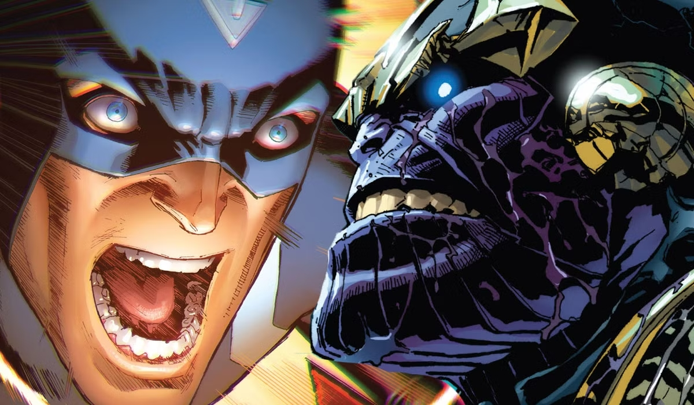
Parmi les Inhumains les plus connus, on peut noter :


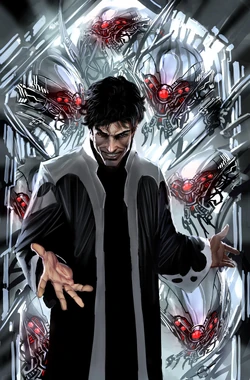

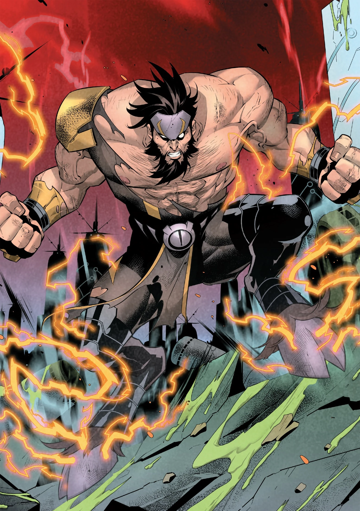
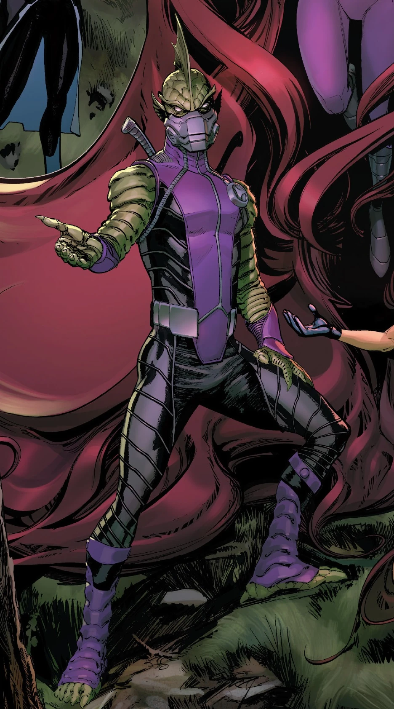
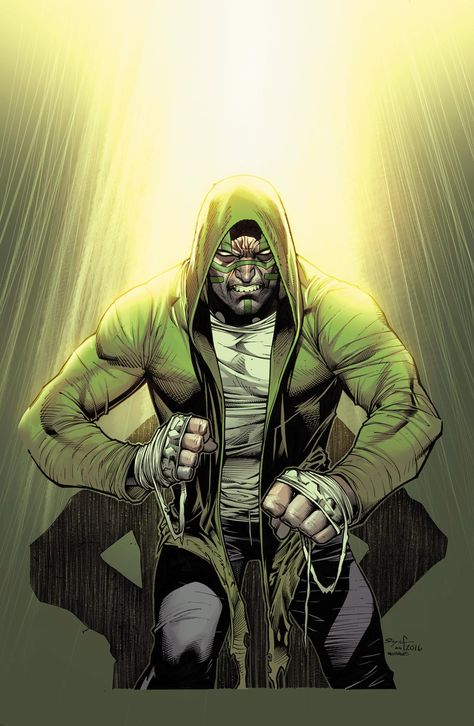

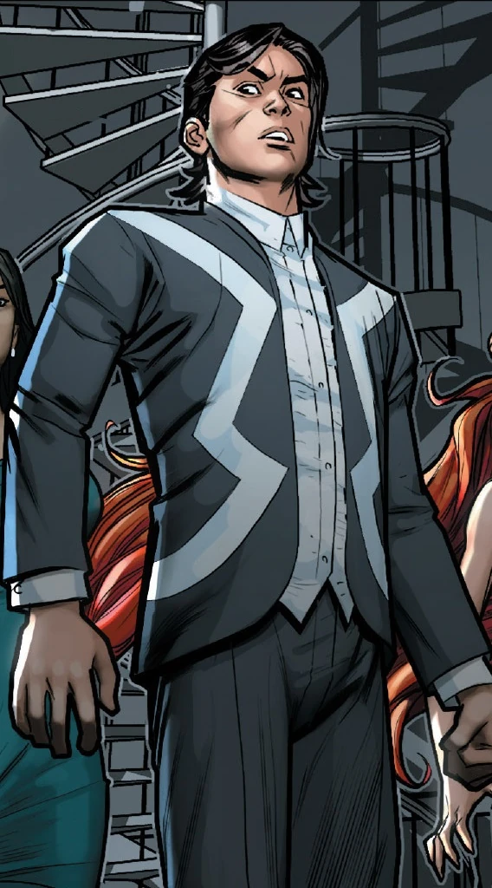

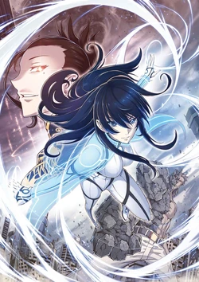
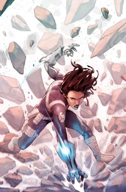
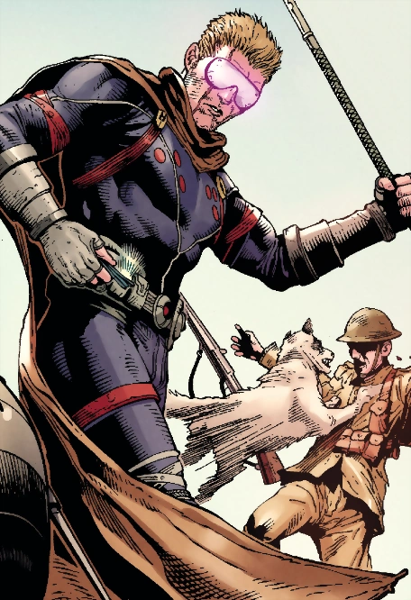
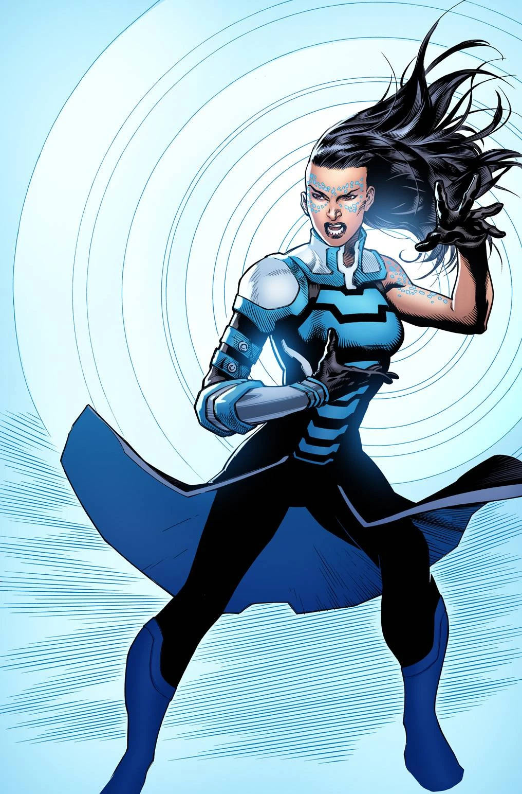
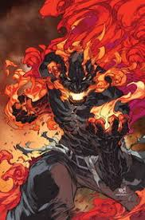

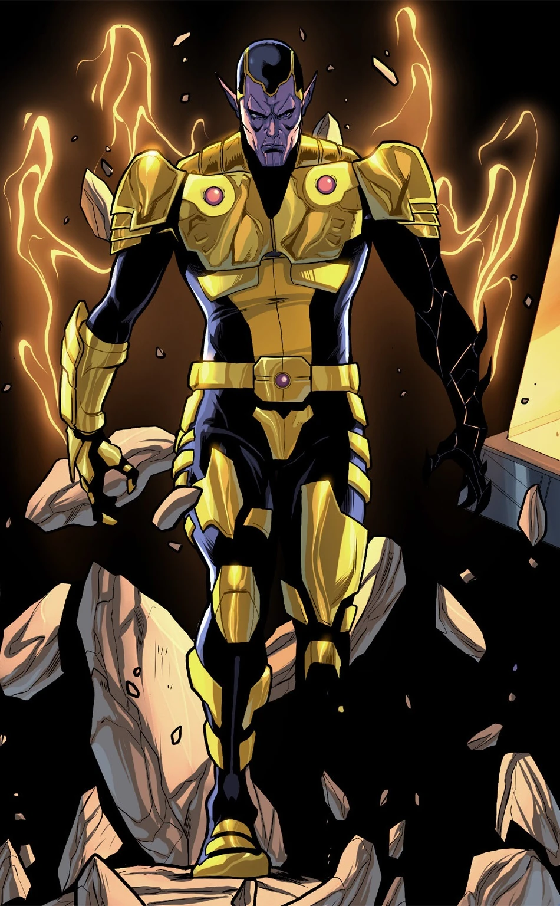
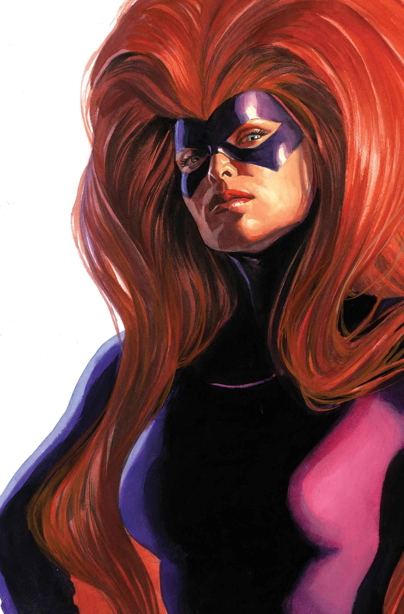

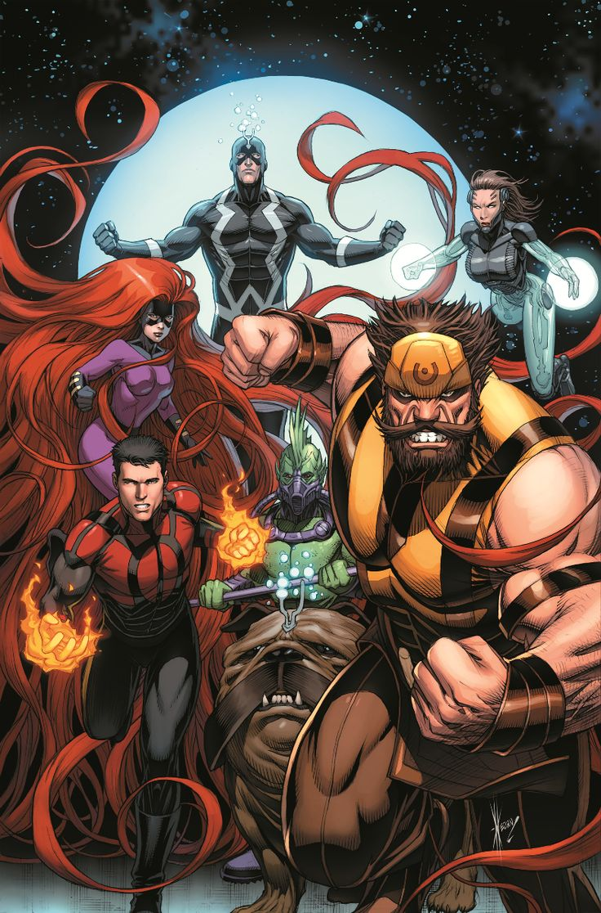
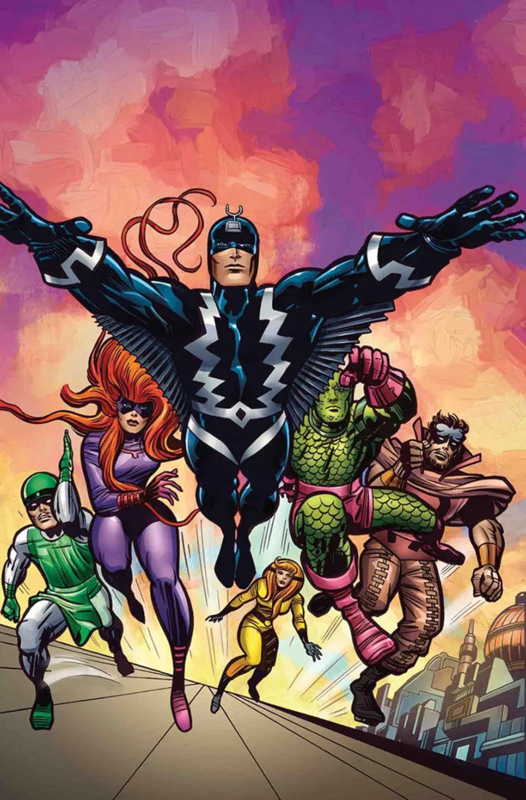